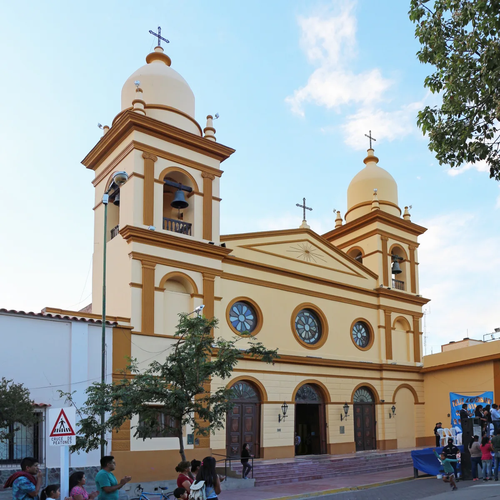

Plaza 20 de Febrero
El punto de encuentro para empezar la caminata por el casco céntrico.
Valles Calchaquíes · Salta
Una caminata guiada para conocer las historias, la arquitectura y las tradiciones del centro de Cafayate.
Consultar por el recorrido
Paseo guiado
El punto de encuentro para empezar la caminata por el casco céntrico.
Jairo cuenta la historia de Cafayate a partir de sus edificios y las costumbres de la ciudad.
Consultá fechas y detalles del paseo en la ficha de reservas.